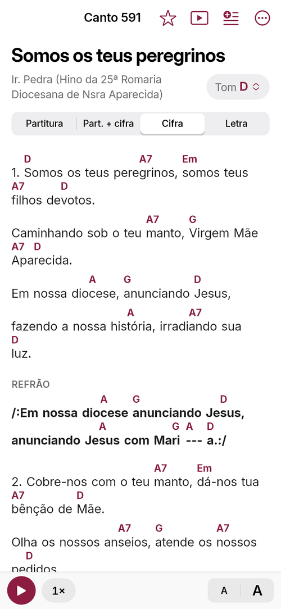
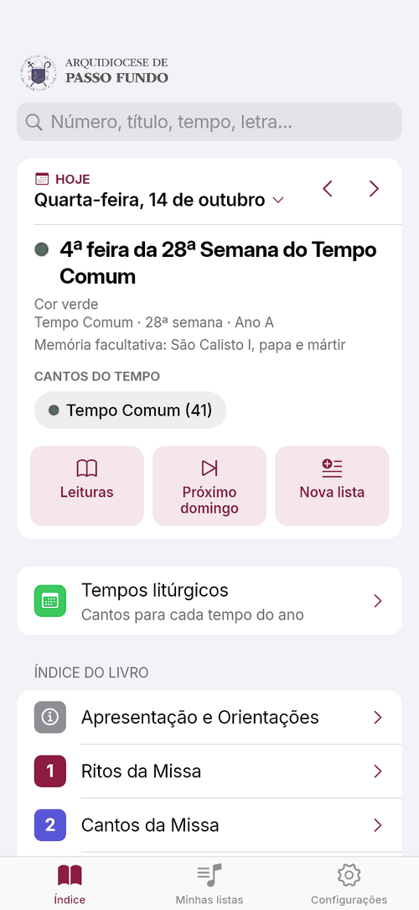
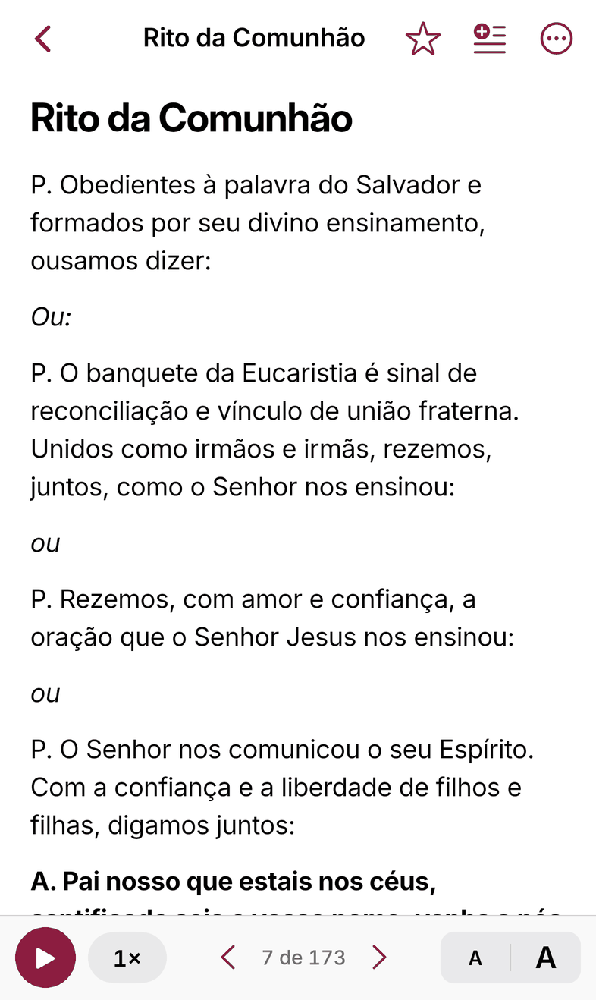

Mostra a partitura de cada canto
As mesmas páginas do Aleluia! impresso, com a partitura de cada canto. Amplie com dois dedos.

 App de cantos e cifras para a missa
App de cantos e cifras para a missaO livro Aleluia! da Arquidiocese de Passo Fundo com mais de 770 cantos: partitura, cifra em qualquer tom, letra e a liturgia do dia, também sem internet.
Ritos da missa · Santo
Canto 339
Santo… Senhor Deus
1. ABSanto, Santo, Santo, SeDEnhor Deus do uniABverso.
E7F#7Hosana nas ABalturas.
2. O céu e a terra proDEclamam a vossa ABglória.
E7F#7Hosana nas alABturas.
3. Bendito o que vem em DEnome do SeABnhor.
As mesmas páginas do Aleluia! impresso, com a partitura de cada canto. Amplie com dois dedos.
Toque em Tom e a cifra passa para qualquer tom. O app lembra o tom escolhido para cada canto.

Tempo, cor e celebrações do dia, com as leituras da missa da CNBB guardadas no aparelho.

Rolagem automática na velocidade do canto, pedal Bluetooth para passar a página e tela sempre acesa.
Monte a lista na ordem da celebração, com cantos e textos do livro. Envie pelo WhatsApp e a equipe importa igual, com os mesmos tons.
O livro numa coluna ao lado da lista: um clique põe ou tira o canto. Arraste para mudar a ordem, Ctrl+F busca e Ctrl+P imprime.

Achou um erro num canto? Abra o canto e toque em ⋯ e Reportar problema.
Não. Cantos, partituras, orações e leituras ficam no aparelho. A internet serve para baixar correções, abrir as vídeo-aulas e sincronizar as listas.
Abra o arquivo baixado e, na primeira vez, permita instalar desta fonte. Se o Play Protect avisar, toque em Mais detalhes e Instalar mesmo assim.
Clique em Mais informações e depois em Executar assim mesmo. O aviso aparece porque o programa ainda não tem assinatura digital paga.
Toque em Abrir no navegador. No Safari, toque em Compartilhar e em Adicionar à Tela de Início: o Aleluia! fica na tela como um app.
Entre com a mesma conta Google nos dois, em Configurações. Sem conta, compartilhe a lista pelo WhatsApp e toque em Importar no outro aparelho.
O arquivo vem direto daqui, fora das lojas. Para atualizar, baixe de novo: as listas continuam. Versão 1.0.8.
